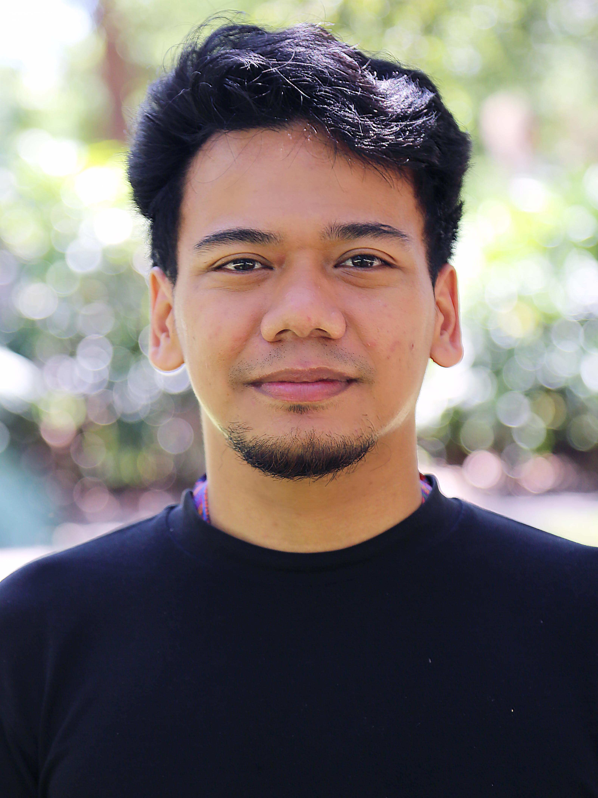

Mapping ASM with optical–radar fusion
Combining multispectral and SAR imagery improves detection of artisanal mining under persistent tropical cloud cover. A companion review sets out which mapping approaches scale.
Spatial ecology · Remote sensing
Mapping mining and land-use change from space, for fairer and more sustainable tropical landscapes.
Brisbane, Australia → Oulu, Finland

I use satellite Earth observation, from optical and radar imagery to machine learning in Google Earth Engine, to reveal environmental change that is hard to see on the ground. Most of my work focuses on artisanal and small-scale mining (ASM), which supports millions of livelihoods across the tropics but remains largely invisible in official maps and biodiversity metrics.
By making these changes measurable at regional and global scales, I aim to give governments, conservation organisations and local communities the evidence they need for inclusive, data-driven decisions. I want my research to connect science and policy, so that the transition to critical minerals and renewable energy does not come at the hidden cost of tropical forests and the people who depend on them.
I trained as a biologist in Indonesia, spent several years in the field mapping protected species and land use on Java, and moved into remote sensing during my master's and PhD at the University of Queensland. I have co-authored more than 12 peer-reviewed papers, including in Nature Communications, Current Biology and Scientific Reports.
Three themes, six projects
Scalable methods that fuse multispectral and radar imagery to map small, scattered and fast-changing mining sites across the tropics.
Measuring what mining costs tropical forests, carbon and wildlife, and where global datasets miss those costs entirely.
Turning multi-sensor Earth observation into paddock-scale indicators that land managers use for drought and grazing decisions.
Combining multispectral and SAR imagery improves detection of artisanal mining under persistent tropical cloud cover. A companion review sets out which mapping approaches scale.
My PhD thesis estimates the regional impact of ASM on deforestation using causal impact methods and land-use change scenarios.
PhD thesis, The University of Queensland
Widely used global land cover maps fail to show mining, so biodiversity metrics built on them overstate current condition and understate room for recovery.
I led the spatial analysis showing that biomass carbon lost to nickel mining has significant implications for climate action and the energy transition.
Indicators such as Green Date, dry-season ground cover, rainfall triggers and water availability, produced at paddock scale for Desert Channels Queensland.
University of Southern Queensland, 2025–2026
Multi-scale responses of Sunda pangolins, civets and serow to forest loss and hunting, and the CamTrapAsia dataset of 239 camera trap studies.
Collaborations, data questions and speaking invitations welcome